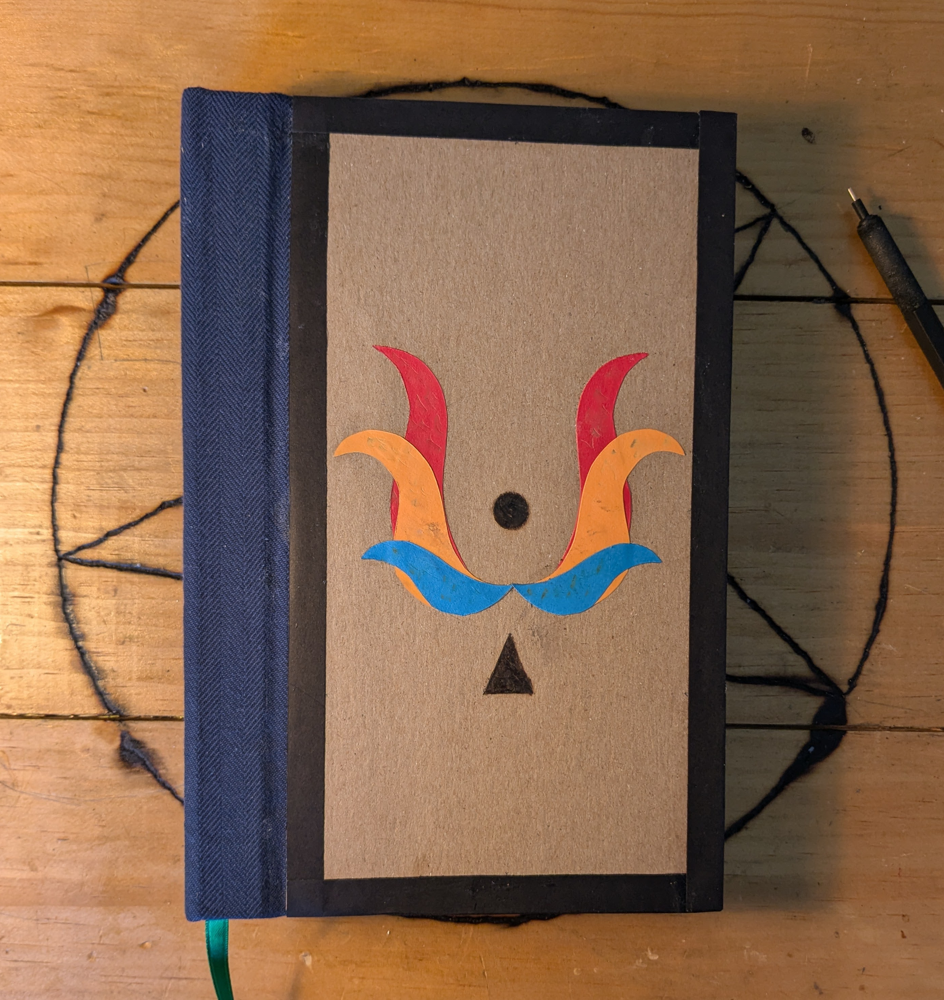

i have been playing with paper for a long time,
since i picked up wireframe modular origami around
2011. it remains one of my most beloved materials, and
i have some particular thoughts on it (and adjacent
media).
notebooks
i usually bind my own, ever since learning to do so in
2019. the signatures are simple printer paper (as far
from glossy as practical), as i like completely blank
surfaces, and the covers are designed to permit them to
lie flat on every page.

this is the most recent one (which, incidentally, contains a
lot of the sketches on this website).